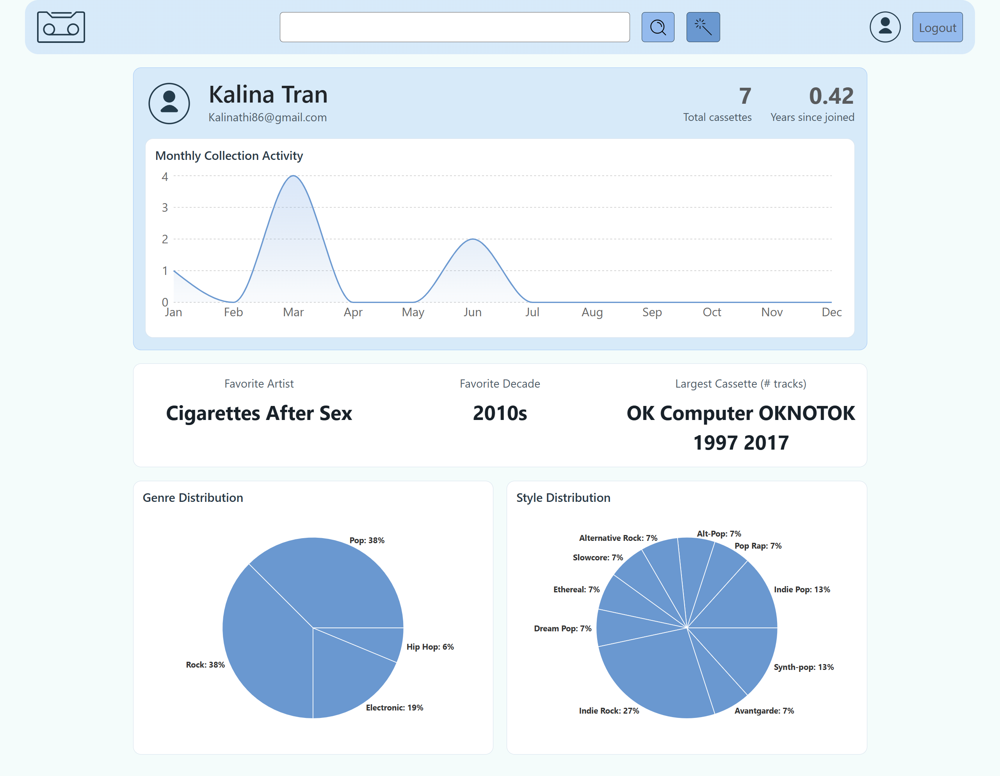

/CASSETTE_INVENTORY_SYSTEM


/PROJECT OVERVIEW
Purpose
To create a niche management platform for cassette tape collectors that bridges the gap between physical media and digital streaming. This project explores the integration of multiple third-party APIs (Discogs, Spotify, and OpenAI) within a modern full-stack architecture to provide a seamless cataloging and listening experience.
My Role
Full-Stack Developer responsible for the end-to-end design and implementation of the system.
- Developed a RESTful Spring Boot backend with JPA/Hibernate for persistent storage.
- Built a dynamic, responsive React 19 frontend using Vite and CSS Modules.
- Integrated the Discogs API for automated album metadata and cover art retrieval.
- Implemented a "Smart Search" recommendation engine using the OpenAI API.
- Designed and coded a custom, vintage-themed Spotify web player using the Spotify Playback SDK.
- Configured secure session-based authentication and user-specific data isolation.
/TECHNICAL IMPLEMENTATION
Architecture
The system utilizes a decoupled architecture. The Spring Boot backend serves as a centralized API gateway and business logic layer, handling interactions with the MySQL database and external microservices. The React frontend consumes these endpoints, providing a smooth, single-page application (SPA) experience. Communication is facilitated via Axios with reactive data handling through React Context.
Key Technologies & Why
Spring Boot 3 was selected for its robust ecosystem and efficient handling of external REST services via WebClient. React 19 was used on the frontend to leverage the latest performance improvements and component-based structure. MySQL provides a reliable relational structure for complex user-to-cassette relationships, while OpenAI was integrated to add a modern, intelligent layer to the traditional inventory search.
API Integration & Design
One of the project's highlights is the "Smart Search" feature. The backend constructs prompts based on the user's existing collection and sends them to OpenAI, which returns intelligent recommendations. Simultaneously, the Discogs API is used to fetch high-quality metadata, ensuring the user's digital inventory matches their physical shelf accurately. The Spotify SDK integration requires complex OAuth flows, which I managed through a dedicated SpotifyService on the backend.
Challenges & Solutions
A major challenge was synchronizing the Spotify Web Playback SDK with the React state. I solved this by implementing a global Player Context that monitors playback status (play/pause/track info) across the entire application. Another challenge was handling the hardcoded Discogs tokens and Spotify URIs; I transitioned sensitive configurations to environment variables and properties files to improve security and maintainability.
Features
AI-Powered Recommendations
The "Smart Search" utilizes OpenAI to analyze your collection's genres and styles, suggesting new music that fits your specific taste profile.
Vintage Spotify Player
A custom-styled Spotify player that mimics a 1980s cassette deck. It allows full playback control of albums in your collection directly through the browser.
Discogs Cataloging
Instant search and import functionality via Discogs, allowing users to add albums with full tracklists and official cover art in seconds.
Dynamic Inventory Management
Real-time filtering and searching of your personal collection. Supports custom image uploads for rare or bootleg tapes not found in global databases.
/IMPACT
Results & Learnings
The final application is a specialized tool that combines the nostalgia of physical collecting with modern AI and streaming technologies. This project significantly deepened my understanding of OAuth2 flows and the complexities of managing state in real-time media applications.
- Mastered multi-API orchestration, ensuring data consistency across Discogs, Spotify, and local storage.
- Gained expertise in React 19’s new features and advanced Context API patterns for global state.
- Improved backend security through Spring Security and session-based authentication.
Future Improvements
To take this project further, I plan to implement:
- Social features to follow friends and view their "digital shelves."
- Batch import functionality using Discogs collection exports.
- Mobile-first optimization for barcode scanning to add tapes via camera.